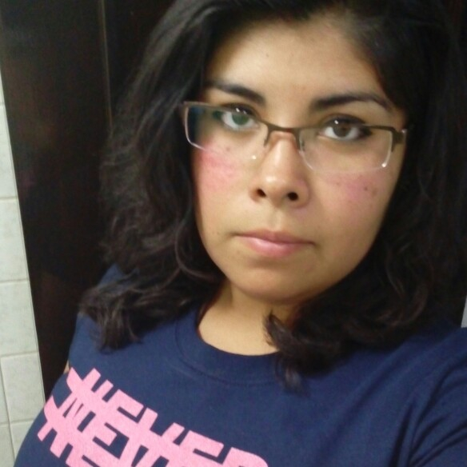

Sharon De Diego
Naci en el Distrito Federal (Ahorta Ciudad de Mexico) el 12 de octubre de 1991 en el Hospital "1ero. de Octubre" Vivo con mis padres y mi hermano menor ademas de que tengo 4 perros rescatados que nos alegran los dias.
Estudie la carrera de Ing. Textil en el Instituto Politecnico Nacional durante 5 años ya que por motivos de salud decidi descansar por 1 año.
Ahora estudio diseño y desarrollo web en Laboratoria junto con aproximadamente 40 chicas de diferentes edades y con pasados diferentes pero con el sueño de ser EXITOSAS
Habilidades
HTML
CSS
JavaScript
Portafolio